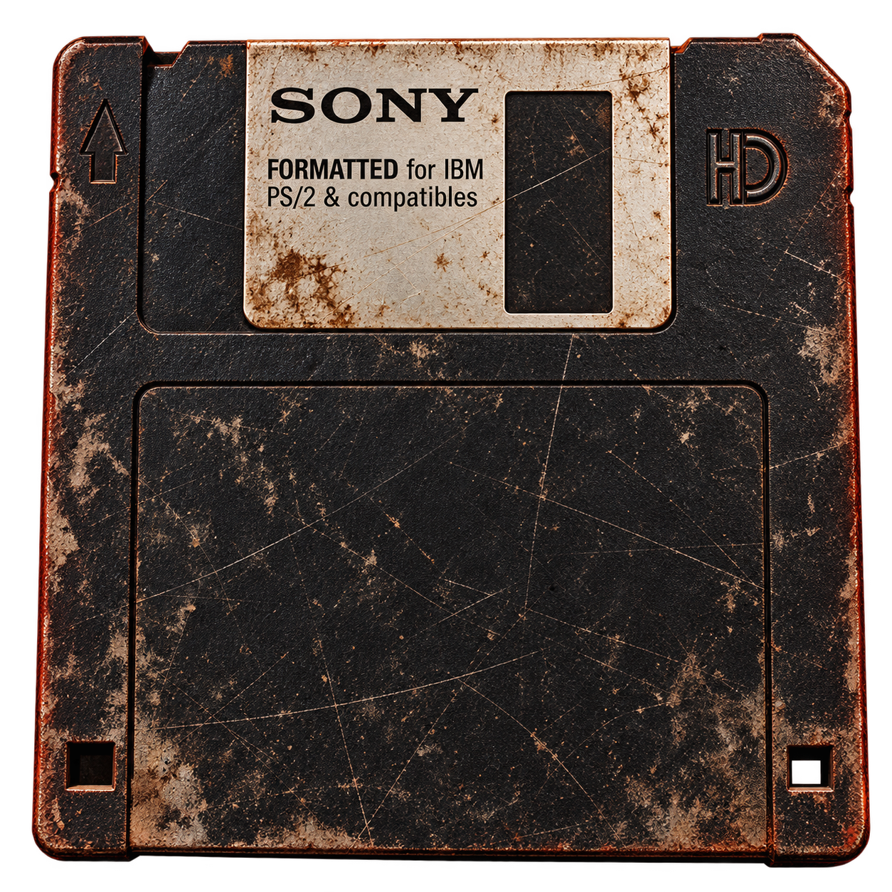

2 de noviembre de 1988
El gusano Morris
En 1988, un experimento informático se convirtió en una
epidemia digital. El gusano Morris se propagó sin control,
infectando miles de ordenadores y paralizando numerosos
sistemas.
El museo conserva un disquete que supuestamente contiene
una copia del programa original. Los técnicos aseguran
haberlo eliminado cientos de veces.
Dicen que este disquete sigue creando copias de sí mismo.
Toca para duplicar